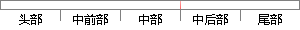

基于高斯混合模型的声纹识别技术的基本理论为针对训练话者集合内的每一个说话人构建属于自己身份特征的概率分布模型，这种概率模型中所设计的参数值是由说话人自身的特征参数分布情况所决定，所以可以用以描述说话人的身份特性。
片段位置图

相似结果|
相似片段 1： GMM 模型参数描述基于 GMM 模型的声纹识别技术的基本理论为针对训练话者集合内的每一个说话人构建属于自己身份特征的概率分布模型(即 GMM模型)，这种概率模型中所涉及的参数值是由说话人自身的特征参数分布情况决定，所以可以用以描述说话人的身份特性。
|
※ 片段修改建议 ※
近似词参考：- 混合：夹杂 混淆
- 模型：模子
- 技术：手艺 技能
- 训练：练习
- 集合：调集 纠合 荟萃 鸠合 聚集 聚拢
- 每一个：每个
- 说话：措辞 语言
- 自己：本身
- 特征：特点 特性
- 概率：几率
- 分布：散布 漫衍
- 模型：模子
- 这种：这类
- 概率：几率
- 模型：模子
- 设计：计划
- 说话：措辞 语言
- 自身：本身
- 分布：散布 漫衍
- 情况：环境 情形
- 决定：决议 决意 抉择
- 所以：以是
- 描述：描写 形貌
- 述说：陈述 陈说
- 说话：措辞 语言
- 特性：特征
系统自动生成语句：基于高斯夹杂模子的声纹识别手艺的基本理论为针对练习话者调集内的每个措辞人构建属于本身身份特点的几率散布模子，这类几率模子中所计划的参数值是由措辞人本身的特点参数散布环境所决议，以是可以用以描写措辞人的身份特征。
注：本片段修改建议为系统自动生成，仅供参考。